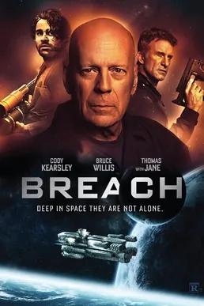

The genetics
The monster is a parasitic organism that infects the crew of a colony ship, hollows out their bodies and reanimates them as killers. According to one review it is possibly a genetically engineered lifeform released by rebels opposed to human colonization; in the film, the revolutionary Teek confesses that he engineered the outbreak to stop humanity from repopulating New Earth. No laboratory or scientist is shown, and a reviewer found that the explanation of the parasite's origin needed more plausibility. The genetic element is therefore the premise of an engineered biological weapon used for ideological ends, which the film treats as a pure threat. A parasite able to reassemble dead bodies and plan an attack on a reactor is beyond any real biology.
How genetics is portrayed
- Overall portrayal of genetics
- negative The engineered parasite is a weapon released by a fanatic, and the film ends ominously with the infection on the new world.
- Outcome of the genetic intervention
- negative The parasite hollows out and reanimates the crew, destroys the ship and is waiting on New Earth when the survivors land.
- Teek
- villain Aim: ideological (negative). The revolutionary confesses that he engineered the parasite outbreak aboard the Ark to stop humanity from repopulating New Earth; the film stages him as an antagonist.
The story
In 2242, with Earth facing extinction, 300,000 selected survivors travel in stasis aboard the colony ship Ark to New Earth. Noah Corel stows away as a junior janitor to be with his pregnant girlfriend Hayley, who is among the sleepers, and is taken under the wing of the veteran janitor Clay. A parasite begins to infect the crew: bodies are hollowed out, the dead come back to life as killers, and the infection spreads. Teek, one of the survivors, confesses that he is a revolutionary who engineered the outbreak to stop humanity from repopulating a new world. The admiral, Hayley's father, dies trying to stop the infected, who fuse into a powerful mutant and head for the reactor, intending to destroy the ship. Discovering that cleaning fluid and Clay's moonshine weaken the creatures, the survivors fight back. Clay sets the ship to self-destruct as Noah and Hayley escape in a pod, but on New Earth they find the infection waiting.